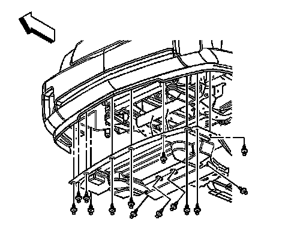
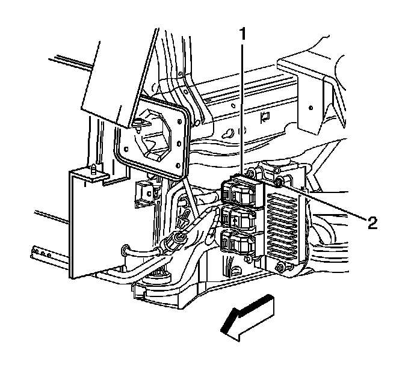

Engine Control Module: Service and Repair
Engine Control Module Replacement
Removal Procedure
Notice: Always turn the ignition off when installing or removing the ECM connectors in order to prevent damage to the components.
Important: It is necessary to record the remaining engine oil life. If the replacement module is not programed with the remaining engine oil life, the engine oil life will default to 100 percent. If the replacement module is not programmed with the remaining engine oil life, the engine oil will need to be changed at 5 000 km (3,000 mi) from the last engine oil change.
Important: It is necessary to record the remaining automatic transmission fluid life. If the replacement module is not programed with the remaining automatic transmission fluid life, the automatic transmission fluid life will default to 100 percent. If the replacement module is not programmed with the remaining automatic transmission fluid life, the automatic transmission fluid will need to be changed at 83 000 km (50,000 mi) from the last automatic transmission fluid change.
1. Using a scan tool, retrieve the percentage of remaining engine oil and the remaining automatic transmission fluid life. Record the remaining engine oil and the remaining automatic transmission fluid life.
2. Turn OFF the ignition.
3. Disconnect the battery negative cable. Refer to Battery Negative Cable Disconnection and Connection (LHD) (Service and Repair)Battery Negative Cable Disconnection and Connection (RHD) (Service and Repair) .

4. Raise and support the vehicle. Refer to Lifting and Jacking the Vehicle (Service and Repair) .
5. Remove the front air deflector. Refer to Front Air Deflector Replacement (Service and Repair) .

6. Disconnect the engine control module (ECM) electrical connectors (1).
7. Remove the ECM mounting nuts (2).
8. Remove the ECM from the vehicle.
Installation Procedure
1. Install the ECM to the vehicle.
Notice: Refer to Fastener Notice (Fastener Notice) .
2. Install the ECM mounting nuts (2).
Tighten the nuts to 8 N.m (71 lb in).
3. Connect the ECM electrical connectors (1).
4. Install the front air deflector. Refer to Front Air Deflector Replacement (Service and Repair) .
5. Lower the vehicle.
6. Connect the battery negative cable. Refer to Battery Negative Cable Disconnection and Connection (LHD) (Service and Repair)Battery Negative Cable Disconnection and Connection (RHD) (Service and Repair) .
7. Program the ECM. Refer to Control Module References (Programming and Relearning) .